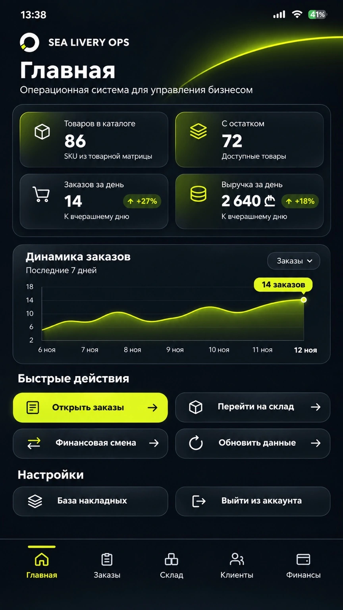

SEA LIVERY OPS.
ВНУТРЕННЯЯ СИСТЕМА · Разработка, тестовая версияОперационная система для бизнеса с морепродуктами: товары, складские движения, партии и переработка сырья в одном интерфейсе.
- Учёт остатков в штуках и килограммах, журнал движений и инвентаризация.
- Производственные рецептуры, выпуск продукции, потери и себестоимость.
- Заказы и финансовые показатели — часть единой архитектуры, отдельные модули дорабатываются.
